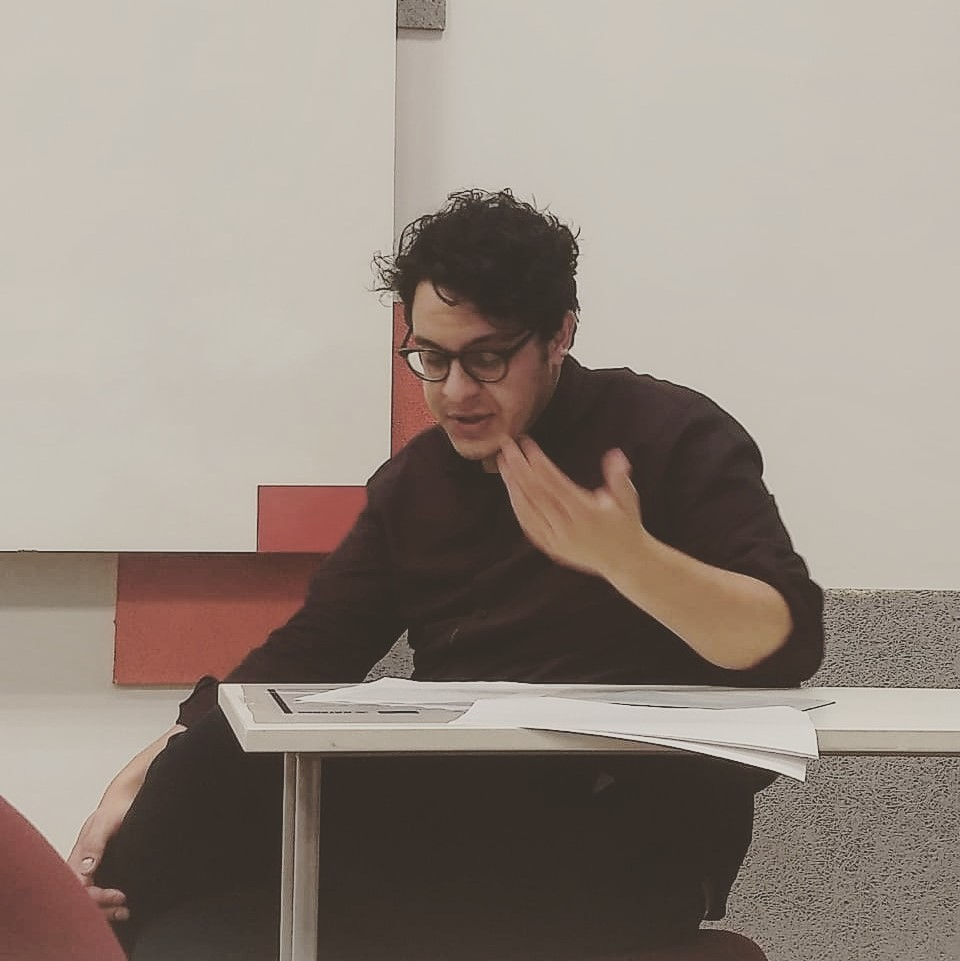

- Decidi transicionar para a área de tecnologia no final de 2021
- Em maio de 2022, consegui minha primeira posição profissional como programador
- Atualmente, faço o curso de desenvolvedor full-stack na Ada
- E também estudo Engenharia de Software na Uninter
- Clicando aqui você consegue acessar alguns dos projetos que desenvolvi
Me tornei programador!
- Decidi transicionar para a área de tecnologia no final de 2021
- Em maio de 2022, consegui minha primeira posição profissional como programador
- Atualmente, faço o curso de desenvolvedor full-stack na Ada
- E também estudo Engenharia de Software na Uninter
- Clicando aqui você consegue acessar alguns dos projetos que desenvolvi
Me tornei programador!
- Decidi transicionar para a área de tecnologia no final de 2021
- Em maio de 2022, consegui minha primeira posição profissional como programador
- Atualmente, faço o curso de desenvolvedor full-stack na Ada
- E também estudo Engenharia de Software na Uninter
- Clicando aqui você consegue acessar alguns dos projetos que desenvolvi
Me tornei programador!

- Sou mestre em filosofia pela PUCPR.
- Minha dissertação deu continuidade às pesquisas que eu fazia na graduação.
- Pude participar de diversos congressos, apresentando pesquisas, e fiz algumas publicações.
- Clicando aqui você consegue baixar um dos artigos que escrevi durante o mestrado.
Fiz uma mestrado em ética
- Sou graduado em direito pela UFPR, apesar de ter atuado pouco na área.
- Durante a graduação, fiz estágio em escritórios e órgãos públicos, como JFPR e MPF.
- Além disso, também me dediquei bastanta à pesquisa, especialmente como membro do PET-Direito.
- Clicando aqui você consegue baixar um dos artigos que escrevi no PET.